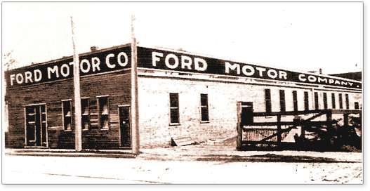
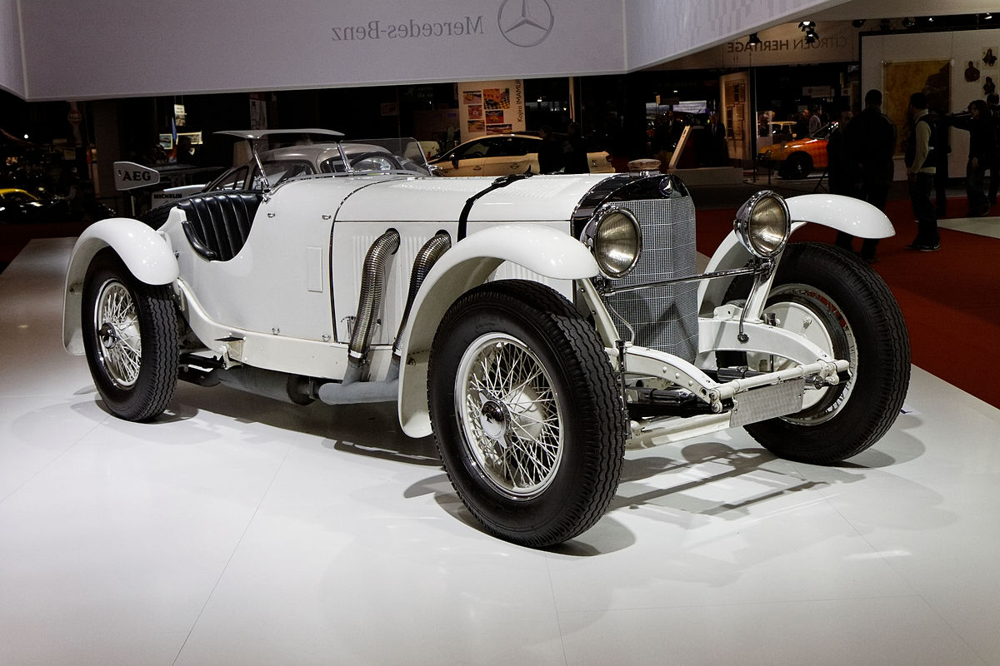

Evoluția Automobilului
Descoperiți fascinanta evoluție a automobilului de-a lungul timpului, de la primele vehicule până la tehnologiile avansate ale zilelor noastre. Această pagină vă oferă o prezentare cronologică a principalelor momente și inovații din istoria automobilului.
Preistoria Automobilelor:
În această perioadă, vehiculele cu tracțiune umană sau animală au fost
primele forme de transport.
De exemplu, căruțele trase de cai
sau boi erau utilizate pentru transportul oamenilor și al mărfurilor.
În paralel, primele experimente cu mașini cu motoare cu abur au fost
realizate, marcând începuturile tehnologiei automobilelor.
Era Pionierilor:
În prima jumătate a secolului al XIX-lea, pionierii precum Karl Benz și Gottlieb Daimler au fost printre cei care au contribuit semnificativ la dezvoltarea primelor automobile cu motoare cu ardere internă. Karl Benz a creat în 1885 primul automobil propulsat de un motor cu ardere internă, cunoscut sub numele de Benz Patent-Motorwagen, marcând astfel începutul erei automobilelor moderne.

Revoluția Industrială:
La sfârșitul secolului al XIX-lea și începutul secolului al XX-lea, a avut loc o creștere rapidă a industriei auto, odată cu introducerea liniilor de asamblare și a producției în masă de către companii precum Ford Motor Company. Această inovație a dus la o scădere semnificativă a costurilor și la o creștere a accesibilității mașinilor pentru publicul larg.
Perioada Interbelică:
Anii interbelici au fost marcați de inovații în design și tehnologie, cu apariția unor modele iconice precum Mercedes-Benz SSK. Această perioadă a fost caracterizată și de o creștere a interesului pentru cursele auto și de apariția unor competiții prestigioase precum 24 de ore de la Le Mans.
Era Modernă:
De la anii '50 și până în prezent, industria auto a cunoscut o creștere continuă, cu introducerea unor tehnologii revoluționare precum injecția electronică, airbag-urile și sistemele avansate de asistență pentru șofer. De asemenea, preocupările pentru siguranța rutieră și impactul asupra mediului au devenit din ce în ce mai importante, conducând la dezvoltarea unor mașini mai sigure și mai eficiente din punct de vedere al consumului de combustibil.